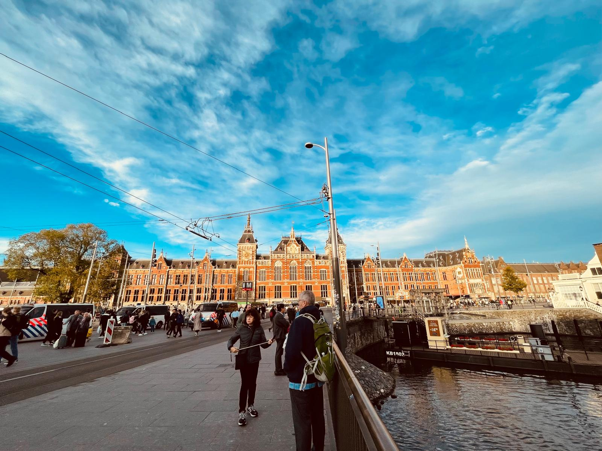
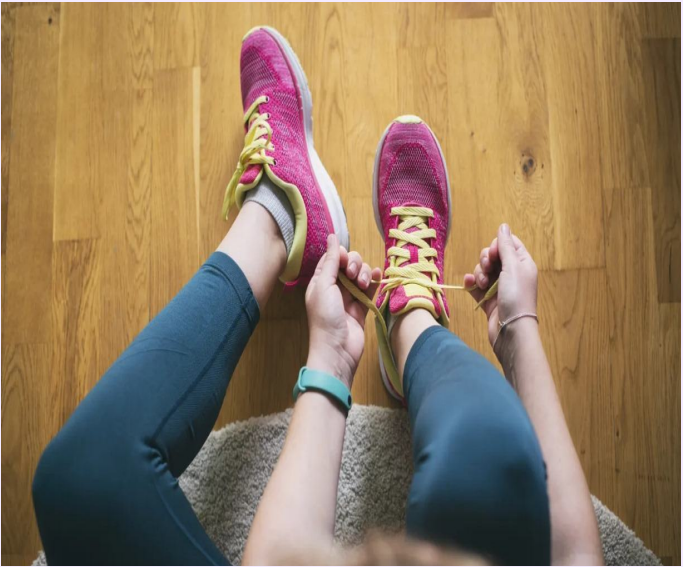

This website is your all-in-one guide for running in Amsterdam. Whether you’re searching for running routes, interested in joining a local community, or looking for businesses that meet your fitness needs, we’re here to support you every step of the way.

Central Amsterdam
What Is the Purpose of This Website?
The primary goal of “City Striders Amsterdam” is to be your go-to source for all things related to running in the city. From discovering running locations to providing advice on gear and safety, the website connects you to local running groups and events, making it easier for runners to meet and share experiences. You’ll also find information on nearby stores specializing in running gear.

Tie your laces
Who Is This Website For?
Whether you’re a local or just visiting, a novice or a seasoned marathon runner, this website is designed for you. Here, you’ll discover a community that shares your passion for the perfect run. Whether your focus is on health, fitness, socializing, or exploring all that Amsterdam has to offer, we have something that will excite your runner’s spirit.
So, put on your running shoes, explore the site, and let “City Striders Amsterdam” take your running experience to new heights!